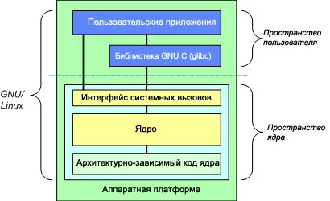
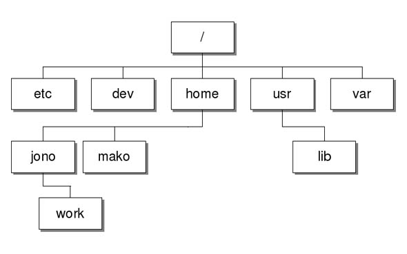
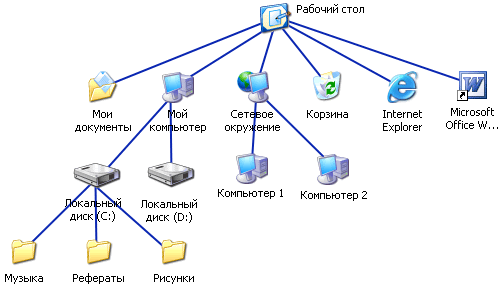
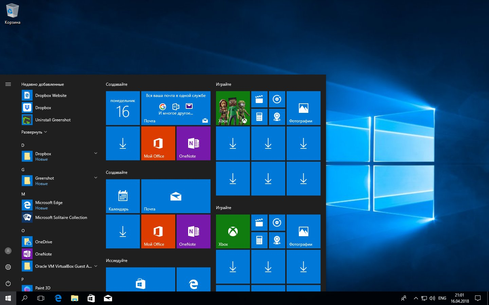

Основные отличия систем семейств Windows и GNU/LinuxОпределениеОпределениеKernelЯдро Linux — монолитное, оно состоит из одного файла, а для расширения его функциональности можно использовать модули.
Kernel
В Windows же используется гибридное ядро, которое состоит из множества небольших частей — библиотек dll, каждая из которых отвечает строго за свою функцию.
Но и это еще не все,
системные вызовы не
используются, вместо них
пользовательские
программы вынуждены
обращаться к
документированным
библиотекам.
Файловая системаLinux предоставляет файловую систему более реально, такой как она есть на самом деле. Начинается структура файловой системы с корня, или, другими словами, основного каталога системного раздела, а уже туда подключаются все другие диски по нужных подкаталогах.
Windows создает дополнительную абстракцию. Хотя диски и разделы именуются похожим образом, как и в Linux, но все это скрыто операционной системой. Пользователю же предоставляется такая абстракция, как диск C:, D:, E:, F: и так далее.
БезопасностьGUIВ ОС Windows графическая среда пользователя является неотъемлемой частью ОС — консольный режим попросту не существует.

Обновление
Использование централизованных репозиториев в Linux дает большую безопасность и надежность, а также возможность обновления. Как только новая версия программы появилась в репозитории, вы можете ее обновить.
В Windows нет репозиториев, вам придется искать все необходимые программы в интернете и устанавливать их вручную. Каждая программа будет обновляться сама, когда будет считать нужным, в том числе и система.
Поддержка и совместимостьДля Microsoft Windows из-за монопольной позиции и результирующего большого процента рынка постоянно выпускается огромное количество ПО.
Более того, если речь идет о "программах-лидерах" в своих прикладных областях, то под ОС Linux нет ни соответствующих версий этих программ, ни полноценных аналогов.
Частично этот недостаток можно компенсировать за счет эмуляторов и приложений на уровне WINE.